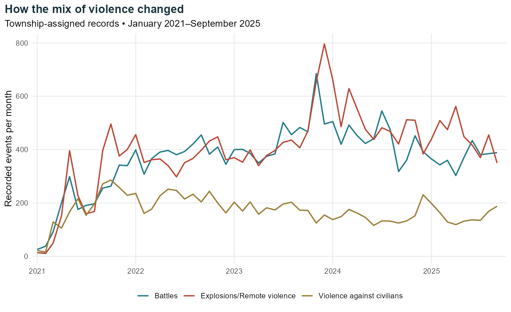
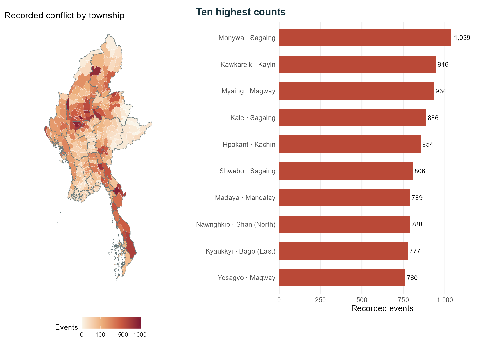
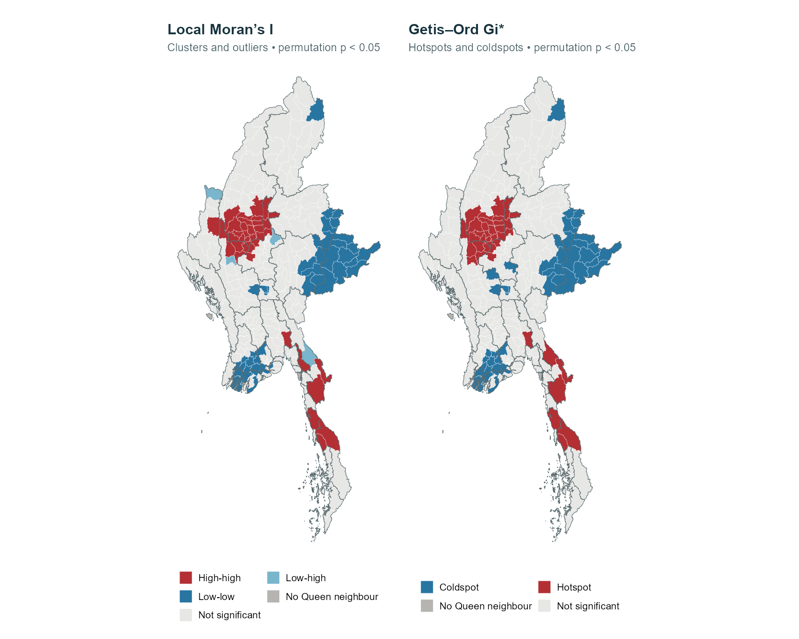
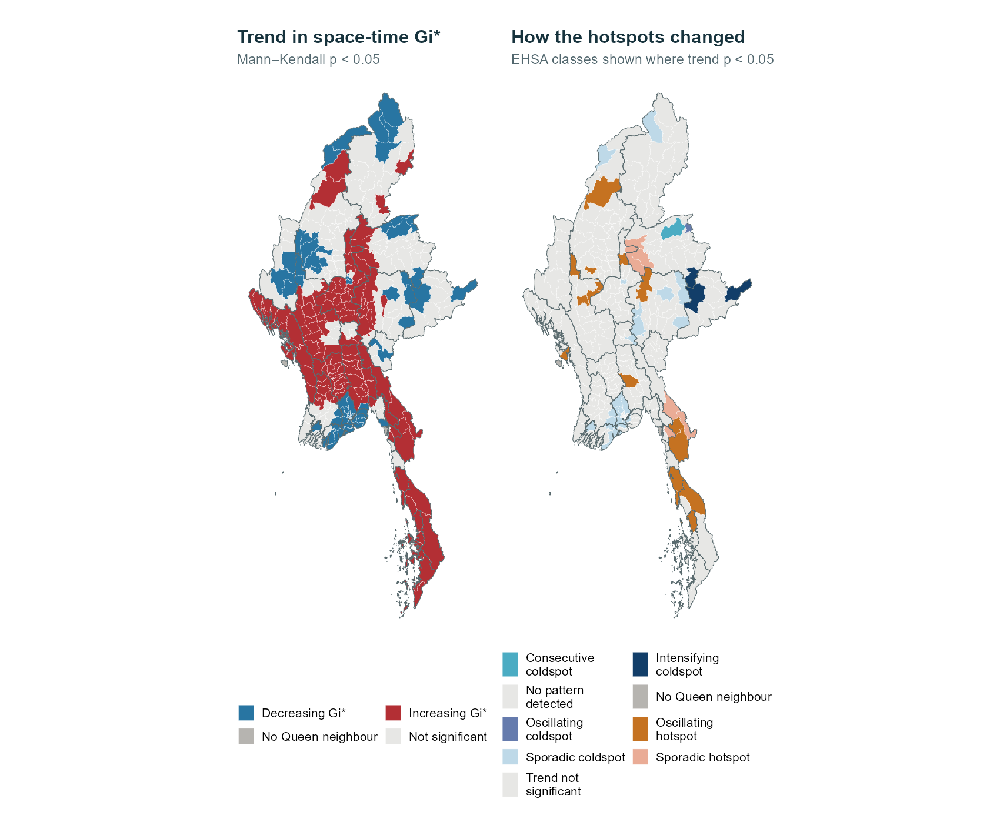
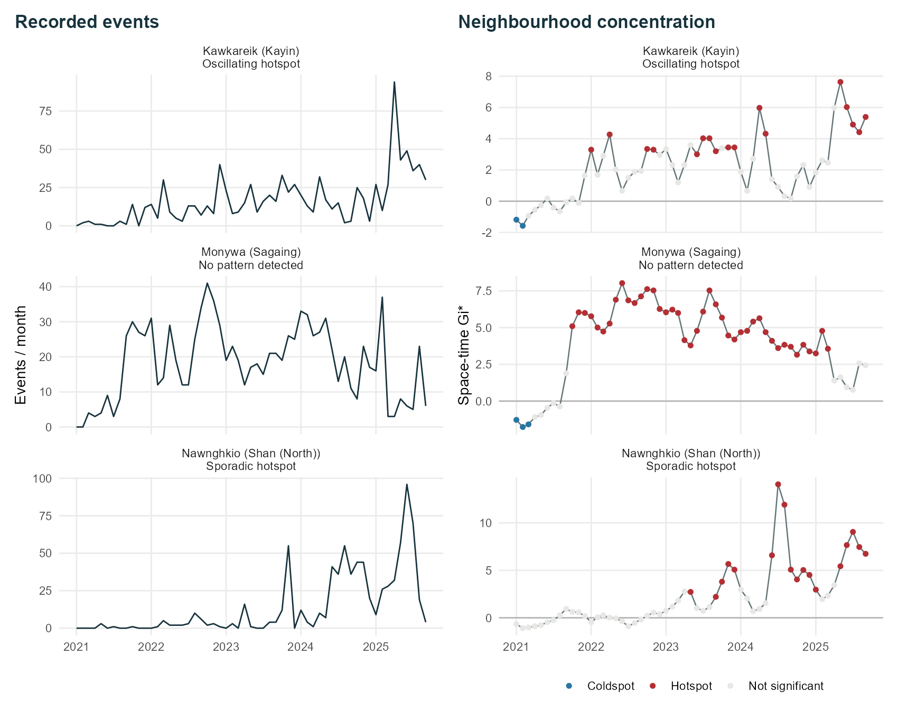
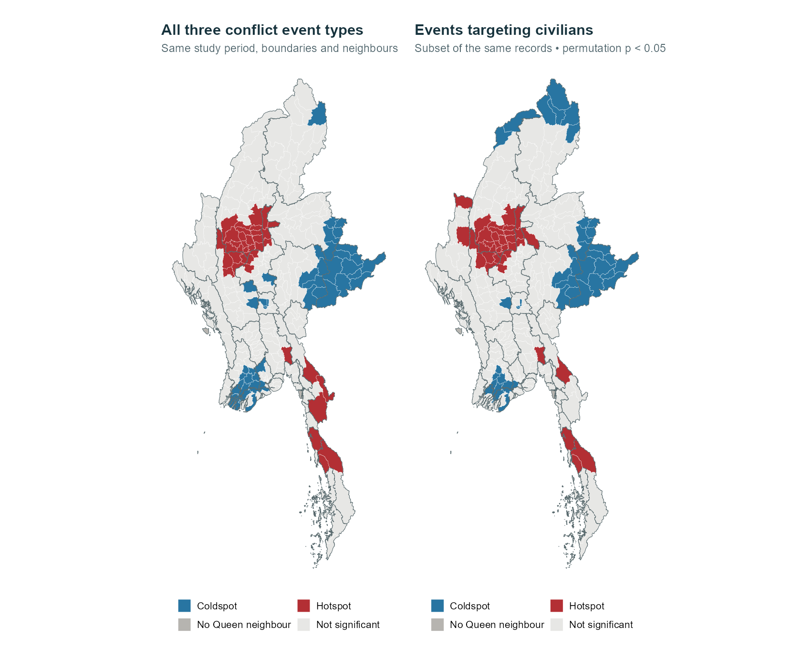

suppressPackageStartupMessages({
library(sf)
library(tidyverse)
library(spdep)
library(sfdep)
library(Kendall)
library(jsonlite)
library(digest)
})Conflict can fall nationally while rising in individual townships. I follow Myanmar’s conflict records from January 2021 to September 2025 to see where events concentrated, how those places changed, and where civilians were targeted.
1 National trends and local differences
The national total fell by 12.4% between January–September 2024 and the same months of 2025. Yet Kawkareik and Nawnghkio each recorded more events in the first nine months of 2025 than in all of 2024.
Monywa has the highest total over the study period. I compare these histories, then look at civilian targeting to identify places where aid groups could check for unmet needs.
1.1 Questions for this study
I work through three questions:
- Which townships form clusters of high recorded conflict, and which stand out from their neighbours?
- Where have hotspots appeared, continued or weakened over the study period?
- Does the pattern change when I focus on events targeting civilians?
The ACLED background reading describes how relationships between armed groups vary across regions. I focus on where the events were recorded and how that changed.
2 Data and coverage
2.1 Sources and study period
| Source | What I use |
|---|---|
| ACLED Myanmar data, supplied through the course’s eLearn page | Event dates, types, named townships, locations, civilian-targeting flags and reported fatalities. |
| MIMU township boundaries v9.4 | The 330 township boundaries and their township codes. |
The supplied file contains 87,109 records and covers all 57 months of the assignment, from January 2021 to September 2025.
The packages below handle the data, maps and spatial tests.
I read the event records and township boundaries, then check dates, IDs and geometry.
base <- "data/take-home-02"
out <- file.path(base, "derived")
dir.create(out, recursive = TRUE, showWarnings = FALSE)
seed <- 62602L
nsim <- 999L
alpha <- 0.05
months <- seq(as.Date("2021-01-01"), as.Date("2025-09-01"), by = "month")
projection <- "+proj=aea +lat_1=10 +lat_2=28 +lat_0=19 +lon_0=96 +datum=WGS84 +units=m +no_defs"message("Reading and checking the supplied data")
csv <- file.path(base, "raw/aspatial/ACLED_Data_Myanmar_Jan2021-Sep2025.csv")
archive <- file.path(base, "raw/aspatial/ACLED_Data_Myanmar_Jan2021-Sep2025 (1).zip")
if (!file.exists(csv) && file.exists(archive)) unzip(archive, exdir = dirname(csv))
stopifnot(file.exists(csv))
raw <- read_csv(csv, col_types = cols(.default = col_character()), show_col_types = FALSE)
stopifnot(nrow(problems(raw)) == 0, !anyDuplicated(raw$event_id_cnty))
raw <- raw %>% mutate(event_date = as.Date(event_date),
across(c(latitude, longitude, fatalities, geo_precision), as.numeric))
stopifnot(!anyNA(raw$event_date), !anyNA(raw$fatalities), all(raw$fatalities >= 0))
towns <- st_read(file.path(base, "raw/geospatial/mmr_polbnda_adm3_250k_mimu_1.shp"),
quiet = TRUE, options = "ENCODING=UTF-8") %>% arrange(TS_PCODE)
stopifnot(nrow(towns) == 330, !anyDuplicated(towns$TS_PCODE),
all(towns$PCode_V == 9.4), all(st_is_valid(towns)))2.2 Which events are included?
normalise <- function(x) gsub("[^a-z0-9]", "", tolower(x))
town_key <- paste(normalise(towns$ST), normalise(towns$TS))
stopifnot(!anyDuplicated(town_key))
core_types <- c("Battles", "Explosions/Remote violence", "Violence against civilians")
core <- raw %>% filter(country == "Myanmar", event_date >= as.Date("2021-01-01"),
event_date <= as.Date("2025-09-30"), event_type %in% core_types)
# One spelling alias, checked against the four corresponding coordinate matches.
core <- core %>% mutate(town_name = if_else(admin3 == "Pangsang", "Pangsang (Panghkam)", admin3),
town_index = match(paste(normalise(admin1), normalise(town_name)), town_key),
exclusion = case_when(
is.na(admin3) | trimws(admin3) == "" ~ "No named township",
geo_precision == 3 ~ "Location only known to a wider area",
is.na(town_index) ~ "Township name could not be matched",
TRUE ~ "Retained"))
audit <- core %>% select(event_id_cnty, event_date, admin1, admin3, geo_precision,
latitude, longitude, town_index, exclusion)
write_csv(audit, file.path(out, "location-audit.csv"))
events <- core %>% filter(exclusion == "Retained") %>%
mutate(TS_PCODE = towns$TS_PCODE[town_index], month = as.Date(format(event_date, "%Y-%m-01")),
civilian = !is.na(civilian_targeting) & civilian_targeting == "Civilian targeting")I exclude six “Indian Ocean” records, protests and strategic developments. The study keeps battles, explosions/remote violence, and violence against civilians.
Of the 54,000 qualifying records, 107 have no named township and 88 have only a broad location. Removing them leaves 53,805 events, with no duplicate IDs.
# Use recorded township names for coastal and boundary cases; do not snap points.
coord_key <- paste(events$longitude, events$latitude)
pts <- st_as_sf(events[!duplicated(coord_key), ], coords = c("longitude", "latitude"), crs = 4326)
hits <- st_intersects(pts, towns)
hit_index <- match(coord_key, unique(coord_key))
coord_match <- vapply(seq_len(nrow(events)), function(i)
events$town_index[i] %in% hits[[hit_index[i]]], logical(1))
write_csv(events[!coord_match, ] %>% select(event_id_cnty, admin1, admin3, longitude, latitude),
file.path(out, "coordinate-disagreements.csv"))I match each township with its state or region, allowing for spelling and punctuation differences, including “Pangsang (Panghkam)”. This avoids assigning city-wide reports to a city-centre point. For 12 records, the coordinates fall outside the named township. I keep the named township and log these cases without changing the raw data.
NoteWhat the counts mean
Reporting coverage varies, so event counts cannot measure risk per person or capture all violence. ACLED flags events where civilians were the main or only target; other incidents may also harm civilians. ACLED codebook
2.3 Keeping months with no recorded events
counts <- events %>% group_by(TS_PCODE, month) %>%
summarise(events = n(), civilian = sum(civilian), fatalities = sum(fatalities), .groups = "drop")
cube_data <- expand_grid(month = months, TS_PCODE = towns$TS_PCODE) %>%
left_join(counts, by = c("TS_PCODE", "month")) %>%
mutate(across(c(events, civilian, fatalities), ~replace_na(.x, 0L)))
cube <- sfdep::spacetime(cube_data, towns, .loc_col = "TS_PCODE", .time_col = "month")
stopifnot(sfdep::is_spacetime_cube(cube), nrow(cube_data) == 330 * 57,
sum(cube_data$events) == nrow(events), !anyNA(cube_data),
identical(cube_data$TS_PCODE, rep(towns$TS_PCODE, length(months))))
saveRDS(cube, file.path(out, "space-time-cube.rds"))
write_csv(cube_data, file.path(out, "township-month-counts.csv"))
totals <- cube_data %>% group_by(TS_PCODE) %>%
summarise(across(c(events, civilian, fatalities), sum), .groups = "drop")
towns <- towns %>% left_join(totals, by = "TS_PCODE") %>% st_transform(projection)Each township gets one row per month: 330 × 57 = 18,810 rows. Months without a qualifying event keep a zero count. They make up 50.8% of the rows, so dropping them would leave out much of the quieter period.
The analysis uses the same boundary version throughout. The monthly comparison also avoids treating the nine months of 2025 as a full year.
3 Where and when conflict was recorded
3.1 The monthly total peaked in late 2023
monthly <- events %>% count(month, event_type, name = "events") %>%
complete(month = months, event_type = core_types, fill = list(events = 0))
annual <- events %>% mutate(year = lubridate::year(event_date)) %>%
group_by(year) %>% summarise(events = n(), civilian = sum(civilian), fatalities = sum(fatalities),
jan_sep = sum(lubridate::month(event_date) <= 9), .groups = "drop")
state_totals <- events %>% group_by(admin1) %>% summarise(events = n(), civilian = sum(civilian), .groups = "drop") %>% arrange(desc(events))# Read the verified analytical outputs and create report figures.
if (.Platform$OS.type == "windows") invisible(Sys.setlocale("LC_CTYPE", "English_United States.utf8"))
suppressPackageStartupMessages({library(sf); library(tidyverse); library(patchwork); library(jsonlite)})
a <- readRDS("data/take-home-02/derived/analysis.rds")
dir.create("take-home-02/figures", recursive = TRUE, showWarnings = FALSE)
towns <- a$towns
states <- towns %>% group_by(ST) %>% summarise(.groups = "drop")
ink <- "#17333d"; orange <- "#ba4937"; teal <- "#237b88"
theme_set(theme_minimal(base_size = 12))
theme_update(plot.title.position = "plot", plot.title = element_text(face = "bold", colour = ink),
panel.grid.minor = element_blank(), legend.position = "bottom",
plot.caption = element_text(hjust = 0, colour = "grey40", size = 9))
save_plot <- function(p, name, width = 9, height = 5.5) {
ggsave(paste0("take-home-02/figures/", name, ".png"), p, width = width, height = height,
dpi = 170, bg = "white", limitsize = FALSE)
}type_palette <- c("Battles" = teal, "Explosions/Remote violence" = orange,
"Violence against civilians" = "#9c813b")
p <- ggplot(a$monthly, aes(month, events, colour = event_type)) + geom_line(linewidth = .8) +
scale_colour_manual(values = type_palette, name = NULL) +
scale_x_date(date_breaks = "1 year", date_labels = "%Y", expand = expansion(mult = c(.01,.02))) +
scale_y_continuous(labels = scales::comma) +
labs(x = NULL, y = "Recorded events per month", title = "How the mix of violence changed",
subtitle = "Township-assigned records • January 2021–September 2025")
save_plot(p, "monthly")
The highest monthly total is November 2023, with 1,465 events, followed by December with 1,447. Counts remain high into early 2024. Explosions and remote violence account for the largest category in both 2024 and the available months of 2025.
January–September 2025 has 8,728 events, compared with 9,961 in the same months of 2024: a 12.4% decline. Some townships still saw increases, as the later timelines show.
3.2 Sagaing accounts for nearly a quarter of events
pmap <- ggplot(towns) + geom_sf(aes(fill = events), colour = "white", linewidth = .06) +
geom_sf(data = states, fill = NA, colour = "#667779", linewidth = .2) +
scale_fill_gradientn(colours = c("#faf5e9", "#edb07d", "#ca5941", "#7c1732"),
trans = "sqrt", breaks = c(0,100,500,1000,2000), name = "Events") +
coord_sf(datum = NA) + theme_void() + theme(legend.position = "bottom") + labs(title = "Recorded conflict by township")
top <- towns %>% st_drop_geometry() %>% slice_max(events, n = 10) %>%
mutate(label = paste0(TS, " · ", ST))
pbar <- ggplot(top, aes(events, reorder(label, events))) + geom_col(fill = orange, width = .65) +
geom_text(aes(label = scales::comma(events)), hjust = -.15, size = 3.4) +
scale_x_continuous(expand = expansion(mult = c(0,.2)), labels = scales::comma) +
labs(x = "Recorded events", y = NULL, title = "Ten highest counts") +
theme(panel.grid.major.y = element_blank(), axis.text.y = element_text(size = 10))
save_plot(pmap + pbar + plot_layout(widths = c(1,1.1)), "distribution", 10, 7)
Sagaing accounts for 12,612 events, or 23.4% of the records. Magway follows with 5,384 and Mandalay with 4,911, placing much of the recorded conflict in central Myanmar.
Monywa has the highest township count, with 1,039 events. Local Moran’s I and Gi* will show whether high counts also cluster across neighbouring townships. Differences in size, population and reporting coverage limit comparisons of personal risk.
3.3 Follow a township through the months
# A small monthly explorer: only township aggregates, no event coordinates or notes.
simple <- st_simplify(towns, dTolerance = 700, preserveTopology = TRUE)
bb <- st_bbox(simple); span <- bb[["ymax"]] - bb[["ymin"]]
svg_path <- function(g) {
polygons <- if (inherits(g, "POLYGON")) list(unclass(g)) else unclass(g)
paste(vapply(polygons, function(poly) paste(vapply(poly, function(ring) {
xy <- cbind((ring[,1] - bb[["xmin"]]) / span * 620 + 12,
(bb[["ymax"]] - ring[,2]) / span * 620 + 12)
paste0("M", paste(apply(round(xy, 2), 1, paste, collapse = ","), collapse = "L"), "Z")
}, character(1)), collapse = " "), character(1)), collapse = " ")
}
town_data <- lapply(seq_len(nrow(towns)), function(i) {
rows <- a$cube[a$cube$TS_PCODE == towns$TS_PCODE[i], ]
list(id = towns$TS_PCODE[i], name = towns$TS[i], state = towns$ST[i],
path = svg_path(st_geometry(simple)[[i]]), events = rows$events, civilian = rows$civilian)
})
payload <- list(months = format(sort(unique(a$cube$month)), "%b %Y"), towns = town_data,
width = unname((bb[["xmax"]] - bb[["xmin"]]) / span * 620 + 24))
template <- readLines("take-home-02/explorer-template.html", warn = FALSE, encoding = "UTF-8")
template <- sub("__DATA__", toJSON(payload, auto_unbox = TRUE, digits = 3), template, fixed = TRUE)
writeLines(template, "take-home-02/conflict-explorer.html", useBytes = TRUE)Try Kawkareik or Nawnghkio, then compare their later rise with Monywa’s longer history of high counts. The colour scale stays fixed as the month changes, so the same colour always represents the same range of counts.
4 Where conflict forms clusters
Local Moran’s I distinguishes clusters from townships that stand out from their neighbours. Gi* identifies concentrations of high or low counts across a neighbourhood.
4.1 What counts as a neighbour?
message("Local Moran's I and Gi*: Queen neighbours, 999 permutations")
nb <- poly2nb(towns, queen = TRUE, snap = 1, row.names = towns$TS_PCODE)
supported <- card(nb) > 0
lw <- nb2listw(nb, style = "W", zero.policy = TRUE)
nb_star <- include.self(nb)
lw_star <- nb2listw(nb_star, style = "W", zero.policy = TRUE)I start with Queen contiguity: townships are neighbours if their boundaries touch at an edge or corner. Each township’s neighbour weights sum to one. Local Moran’s I compares the township with those neighbours; Gi* also includes the township itself.
Chaungzon, Munaung and Cocokyun have no shared-boundary neighbours in this layer. Their counts remain in the study, but I leave them unclassified in the Queen-based tests. I use an Albers projection centred on Myanmar for mapping and distance checks, with a one-metre tolerance when identifying shared boundaries.
class_lisa <- function(x, lag, p) case_when(
is.na(p) ~ "No shared-boundary neighbour",
p >= alpha ~ "Not significant",
x > mean(x) & lag > mean(x) ~ "High-high",
x > mean(x) & lag <= mean(x) ~ "High-low",
x <= mean(x) & lag > mean(x) ~ "Low-high",
TRUE ~ "Low-low")
gi_test <- function(x, listw, tested, random_seed) {
g <- localG_perm(x, listw, nsim = nsim, alternative = "two.sided",
iseed = random_seed, zero.policy = TRUE, no_repeat_in_row = TRUE)
p <- attr(g, "internals")[, "Pr(z != E(Gi)) Sim"]
p[!tested] <- NA_real_
tibble(gi = as.numeric(g), p = p, q = p.adjust(p, "BH"),
cluster = case_when(is.na(p) ~ "No shared-boundary neighbour", p >= alpha ~ "Not significant",
as.numeric(g) > 0 ~ "Hotspot", TRUE ~ "Coldspot"))
}
local_results <- function(x, random_seed) {
m <- localmoran_perm(x, lw, nsim = nsim, alternative = "two.sided", iseed = random_seed,
zero.policy = TRUE, no_repeat_in_row = TRUE)
p <- m[, "Pr(z != E(Ii)) Sim"]; p[!supported] <- NA_real_
lag <- lag.listw(lw, x, zero.policy = TRUE)
g <- gi_test(x, lw_star, supported, random_seed + 1L)
tibble(TS_PCODE = towns$TS_PCODE, moran_i = m[, "Ii"], moran_p = p,
moran_q = p.adjust(p, "BH"), lisa = class_lisa(x, lag, p),
gi = g$gi, gi_p = g$p, gi_q = g$q, gi_cluster = g$cluster)
}Both tests use 999 conditional permutations: counts are shuffled among other townships while the focal count stays fixed. The maps show two-sided permutation p < 0.05; grey areas are not significant.
4.2 Most hotspots are in central Myanmar
local_all <- local_results(towns$events, seed)palette <- c("High-high" = "#b32f34", "Low-low" = "#2875a2", "High-low" = "#e6a25c",
"Low-high" = "#79b5cc", "Hotspot" = "#b32f34", "Coldspot" = "#2875a2",
"Not significant" = "#e7e7e5", "No shared-boundary neighbour" = "#b6b4b0",
"No pattern detected" = "#e7e7e5", "Trend not significant" = "#e7e7e5",
"New hotspot" = "#ffb658", "Consecutive hotspot" = "#f16c47",
"Intensifying hotspot" = "#800f25", "Persistent hotspot" = "#bb2737",
"Diminishing hotspot" = "#d47d88", "Sporadic hotspot" = "#eaac96",
"Oscillating hotspot" = "#c57221", "Historical hotspot" = "#dcc2b6",
"New coldspot" = "#8ad5d8", "Consecutive coldspot" = "#4bacc3",
"Intensifying coldspot" = "#123e69", "Persistent coldspot" = "#2875a2",
"Diminishing coldspot" = "#80a6c6", "Sporadic coldspot" = "#bed9e8",
"Oscillating coldspot" = "#657bad", "Historical coldspot" = "#cbcbdc")
map_plot <- function(d, column, title, subtitle = NULL) {
ggplot(d) + geom_sf(aes(fill = .data[[column]]), colour = "white", linewidth = .07) +
geom_sf(data = states, fill = NA, colour = "#596a6e", linewidth = .2) +
scale_fill_manual(values = palette, na.value = "#e7e7e5", name = NULL,
labels = function(x) stringr::str_wrap(sub("No shared-boundary neighbour", "No Queen neighbour", x), 18)) +
coord_sf(datum = NA) + theme_void(base_size = 11) +
theme(legend.position = "bottom", plot.title = element_text(face = "bold", colour = ink),
plot.subtitle = element_text(colour = "#52676e", size = 10),
legend.text = element_text(size = 9), legend.key.size = grid::unit(.4, "cm"),
plot.margin = margin(10, 8, 10, 8)) +
guides(fill = guide_legend(ncol = 2, byrow = TRUE)) + labs(title = title, subtitle = subtitle)
}local_map <- towns %>% left_join(a$local, by = "TS_PCODE")
save_plot(map_plot(local_map, "lisa", "Local Moran’s I", "Clusters and outliers • permutation p < 0.05") +
map_plot(local_map, "gi_cluster", "Getis–Ord Gi*", "Hotspots and coldspots • permutation p < 0.05"),
"local-association", 10, 8)
Local Moran’s I identifies 38 high–high townships, 52 low–low townships and four low–high outliers. The outliers are Hlaingbwe, Tonzang, Seikphyu and Pyinoolwin: their own counts are below the township average, but their neighbours’ weighted counts are above it. No high–low outlier passes the significance threshold. Gi* identifies 38 hotspots and 53 coldspots.
Sagaing has 18 Gi* hotspots, Mandalay seven and Magway six. Both methods point to central Myanmar, though their different tests give slightly different low-count classifications.
Kawkareik ranks second with 946 events, yet its whole-period Gi* result is not significant. Its monthly history tells a different story.
bind_rows(a$local %>% count(lisa, name = "Townships") %>% rename(Result = lisa) %>% mutate(Method = "Local Moran’s I"),
a$local %>% count(gi_cluster, name = "Townships") %>% rename(Result = gi_cluster) %>% mutate(Method = "Gi*")) %>%
select(Method, Result, Townships) %>% knitr::kable()| Method | Result | Townships |
|---|---|---|
| Local Moran’s I | High-high | 38 |
| Local Moran’s I | Low-high | 4 |
| Local Moran’s I | Low-low | 52 |
| Local Moran’s I | No shared-boundary neighbour | 3 |
| Local Moran’s I | Not significant | 233 |
| Gi* | Coldspot | 53 |
| Gi* | Hotspot | 38 |
| Gi* | No shared-boundary neighbour | 3 |
| Gi* | Not significant | 236 |
4.3 Which hotspots survive stricter checks?
# Neighbourhood sensitivity: a symmetric six-nearest-centroid graph.
centres <- st_coordinates(st_centroid(st_geometry(towns)))
nb_knn <- knn2nb(knearneigh(centres, k = 6), sym = TRUE)
knn_g <- gi_test(towns$events, nb2listw(include.self(nb_knn), style = "W"),
rep(TRUE, nrow(towns)), seed + 20L)
precise_totals <- events %>% filter(geo_precision == 1) %>% count(TS_PCODE, name = "precise")
precise_x <- replace_na(precise_totals$precise[match(towns$TS_PCODE, precise_totals$TS_PCODE)], 0L)
precise_g <- gi_test(precise_x, lw_star, supported, seed + 30L)I repeat Gi* with a symmetric six-nearest-centroid neighbourhood and with only the more precisely located records. I also apply the Benjamini–Hochberg adjustment because testing many townships can produce chance discoveries.
tibble(Check = c("Queen neighbours", "Queen neighbours, multiple-test adjustment", "Six nearest neighbours", "Queen neighbours, precise locations only"),
Hotspots = c(sum(hot), sum(hot & a$local$gi_q < .05, na.rm = TRUE),
sum(a$comparison$knn6[valid] == "Hotspot"), sum(a$comparison$precise_only == "Hotspot")),
Coldspots = c(sum(a$local$gi_cluster == "Coldspot"), sum(a$local$gi_cluster == "Coldspot" & a$local$gi_q < .05, na.rm = TRUE),
sum(a$comparison$knn6[valid] == "Coldspot"), sum(a$comparison$precise_only == "Coldspot"))) %>% knitr::kable()| Check | Hotspots | Coldspots |
|---|---|---|
| Queen neighbours | 38 | 53 |
| Queen neighbours, multiple-test adjustment | 19 | 24 |
| Six nearest neighbours | 38 | 75 |
| Queen neighbours, precise locations only | 38 | 50 |
The multiple-test adjustment reduces the hotspot count from 38 to 19. I therefore treat the wider unadjusted hotspot map as exploratory. Across the 327 townships with Queen neighbours, the hotspot/coldspot/non-significant classifications agree in 87.2% of cases with six-nearest neighbours and 91.7% when only more precise locations are retained.
The broad pattern holds, though individual labels change and six-nearest neighbours produces more coldspots. I keep shared boundaries for the main analysis.
5 How local patterns changed
Similar totals can hide different histories: repeated conflict early in the study or a later surge. Monthly results show when each place became a hotspot.
5.1 Following hotspots through time
# EHSA uses an explicit space-time neighbourhood. The same and previous month
# are included, with Gi* standardised against the entire cube. Unlike calling
# local_gstar_perm() separately by month, this is a space-time Gi* statistic.
make_st_listw <- function(spatial_nb, n_times, lag = 1L) {
n <- length(spatial_nb)
neighbours <- lapply(seq_len(n * n_times), function(i) {
tt <- (i - 1L) %/% n + 1L; loc <- (i - 1L) %% n + 1L
times <- seq.int(max(1L, tt - lag), tt)
sort(as.integer(unlist(lapply(times, function(t) (t - 1L) * n + spatial_nb[[loc]]))))
})
class(neighbours) <- "nb"
attr(neighbours, "region.id") <- as.character(seq_along(neighbours))
attr(neighbours, "call") <- match.call()
attr(neighbours, "sym") <- FALSE
attr(neighbours, "self.included") <- TRUE
nb2listw(neighbours, style = "W", zero.policy = TRUE)
}st_lw <- make_st_listw(nb_star, length(months))
stopifnot(all(vapply(seq_along(st_lw$neighbours), function(i)
i %in% st_lw$neighbours[[i]] && all((st_lw$neighbours[[i]] - 1L) %/% 330 <= (i - 1L) %/% 330), logical(1))))
message("Space-time Gi*: 18,810 bins, current/previous month, 999 permutations")
gi_key <- digest(list(cube_data$events, st_lw, supported, seed, nsim, body(gi_test), packageVersion("spdep")))
gi_cache_path <- file.path(out, "space-time-gi-cache.rds")
gi_cache <- if (file.exists(gi_cache_path)) readRDS(gi_cache_path) else NULL
if (!is.null(gi_cache) && identical(gi_cache$key, gi_key)) {
st_g <- gi_cache$result
} else {
st_g <- gi_test(cube_data$events, st_lw, rep(supported, length(months)), seed + 40L)
saveRDS(list(key = gi_key, result = st_g), gi_cache_path)
}Emerging Hot Spot Analysis (EHSA) uses each township and its Queen neighbours in the current and previous month. January 2021 uses January alone. Gi* compares these counts with the distribution across the whole space–time cube.
gi_series <- bind_cols(cube_data %>% select(TS_PCODE, month, events, civilian),
st_g %>% select(gi, p)) %>%
group_by(month) %>% mutate(q = p.adjust(p, "BH")) %>% ungroup()
mk <- gi_series %>% group_by(TS_PCODE) %>% group_modify(~ {
x <- .x$gi
if (all(is.na(.x$p))) return(tibble(tau = NA_real_, trend_p = NA_real_, lag1 = NA_real_))
m <- Kendall::MannKendall(x)
tibble(tau = as.numeric(m$tau), trend_p = as.numeric(m$sl),
lag1 = as.numeric(acf(x, lag.max = 1, plot = FALSE)$acf[2]))
}) %>% ungroup() %>% mutate(trend_q = p.adjust(trend_p, "BH"))The Mann–Kendall test checks whether each township’s Gi* scores tend to rise or fall. It tracks the neighbourhood concentration; the event timelines show the township’s own counts.
# Rules follow the ArcGIS EHSA definitions, with strict p < 0.05.
# Trend p-values and bin p-values answer different questions.
classify_ehsa <- function(z, p, tau, trend_p, threshold = alpha) {
if (anyNA(p) || anyNA(z)) return("No shared-boundary neighbour")
hot <- z > 0 & p < threshold; cold <- z < 0 & p < threshold
n <- length(z)
for (side in c("hot", "cold")) {
hit <- if (side == "hot") hot else cold
opposite <- if (side == "hot") cold else hot
suffix <- paste0(side, "spot")
share <- mean(hit); final <- hit[n]
direction <- if (side == "hot") tau else -tau
if (final && sum(hit) == 1) return(paste("New", suffix))
trailing <- if (final) rle(rev(hit))$lengths[1] else 0L
if (final && trailing >= 2 && sum(hit) == trailing && share < .9)
return(paste("Consecutive", suffix))
if (share >= .9 && !final) return(paste("Historical", suffix))
if (share >= .9 && final) {
if (trend_p >= threshold) return(paste("Persistent", suffix))
return(paste(if (direction > 0) "Intensifying" else "Diminishing", suffix))
}
if (final && share < .9)
return(paste(if (any(opposite)) "Oscillating" else "Sporadic", suffix))
}
"No pattern detected"
}EHSA then combines that trend with the months classified as hot or cold. A new hotspot appears at the end for the first time; a consecutive hotspot has an uninterrupted final run; a sporadic hotspot appears on and off. Persistent, intensifying and diminishing hotspots require at least 90% of months to be hot. I use the same rules with the signs reversed for coldspots. Classification definitions
5.2 Hotspots came and went
ehsa <- gi_series %>% left_join(mk, by = "TS_PCODE") %>% group_by(TS_PCODE) %>%
summarise(tau = first(tau), trend_p = first(trend_p), trend_q = first(trend_q),
block_p = first(block_p), block_q = first(block_q), lag1 = first(lag1),
hot_months = sum(gi > 0 & p < alpha, na.rm = TRUE),
cold_months = sum(gi < 0 & p < alpha, na.rm = TRUE),
classification = classify_ehsa(gi, p, first(tau), first(trend_p)),
classification_fdr = classify_ehsa(gi, q, first(tau), first(trend_q)), .groups = "drop") %>%
mutate(map_class = case_when(is.na(trend_p) ~ "No shared-boundary neighbour",
trend_p >= alpha ~ "Trend not significant",
TRUE ~ classification))ehsa_map <- towns %>% left_join(a$ehsa, by = "TS_PCODE")
trend_map <- ehsa_map %>% mutate(trend = case_when(
is.na(trend_p) ~ "No shared-boundary neighbour", trend_p >= .05 ~ "Not significant",
tau > 0 ~ "Increasing Gi*", TRUE ~ "Decreasing Gi*"))
palette <- c(palette, "Increasing Gi*" = "#b32f34", "Decreasing Gi*" = "#2875a2")
save_plot(map_plot(trend_map, "trend", "Trend in space-time Gi*", "Mann–Kendall p < 0.05") +
map_plot(ehsa_map, "map_class", "How the hotspots changed", "EHSA classes shown where trend p < 0.05"),
"ehsa", 10, 8.2)
The full classification finds 26 oscillating hotspots and eight sporadic hotspots. Of these, 16 and seven, respectively, also have significant Mann–Kendall trends and appear on the map. No township meets the new, consecutive, persistent or intensifying hotspot rules in this run.
“Oscillating” has a specific meaning here: the township ends as a hotspot but has previously been a significant coldspot. It does not necessarily mean a regular cycle. “Sporadic” describes an on-and-off hotspot that ends hot and has no significant cold months.
The September 2025 endpoint affects the labels. Earlier hot months can still end in “No pattern detected” if the final-month rules are not met, as Monywa shows below.
Following the handout, the map shows Mann–Kendall p < 0.05. The table also includes classifications without a significant trend, which this filter hides.
a$ehsa %>% group_by(classification) %>%
summarise(`All townships` = n(), `Trend p < 0.05` = sum(trend_p < .05, na.rm = TRUE), .groups = "drop") %>%
rename(Pattern = classification) %>% knitr::kable()| Pattern | All townships | Trend p < 0.05 |
|---|---|---|
| Consecutive coldspot | 1 | 1 |
| Intensifying coldspot | 3 | 3 |
| No pattern detected | 221 | 153 |
| No shared-boundary neighbour | 3 | 0 |
| Oscillating coldspot | 3 | 1 |
| Oscillating hotspot | 26 | 16 |
| Persistent coldspot | 12 | 0 |
| Sporadic coldspot | 53 | 37 |
| Sporadic hotspot | 8 | 7 |
5.3 Three townships, three different histories
I take the highest-count township from each of the two hotspot classes with significant trends, plus Monywa for its largest overall total.
# Select the highest count in each observed significant hotspot class (up to
# two), alongside the highest-count township overall as a contrasting history.
candidates <- ehsa_map %>% st_drop_geometry() %>%
filter(grepl("hotspot$", classification), trend_p < .05) %>%
arrange(desc(events)) %>% distinct(classification, .keep_all = TRUE) %>% slice_head(n = 2)
candidates <- bind_rows(candidates, ehsa_map %>% st_drop_geometry() %>% slice_max(events, n = 1, with_ties = FALSE)) %>%
distinct(TS_PCODE, .keep_all = TRUE)
stopifnot(nrow(candidates) == 3)
case_series <- a$gi_series %>% inner_join(candidates %>% select(TS_PCODE, TS, ST, classification), by = "TS_PCODE") %>%
mutate(label = paste0(TS, " (", ST, ")\n", classification),
status = case_when(p >= .05 ~ "Not significant", gi > 0 ~ "Hotspot", TRUE ~ "Coldspot"))
p1 <- ggplot(case_series, aes(month, events)) + geom_line(colour = ink, linewidth = .55) +
facet_wrap(~label, ncol = 1, scales = "free_y") +
scale_x_date(date_breaks = "1 year", date_labels = "%Y") + labs(x = NULL, y = "Events / month", title = "Recorded events")
p2 <- ggplot(case_series, aes(month, gi)) + geom_hline(yintercept = 0, colour = "#b5b5b5") +
geom_line(colour = "#647577", linewidth = .5) + geom_point(aes(colour = status), size = 1.5) +
facet_wrap(~label, ncol = 1, scales = "free_y") + scale_colour_manual(values = palette, name = NULL) +
scale_x_date(date_breaks = "1 year", date_labels = "%Y") + labs(x = NULL, y = "Space-time Gi*", title = "Neighbourhood concentration")
save_plot(p1 + p2, "township-stories", 10, 8)
write_csv(candidates %>% select(TS_PCODE, TS, ST, events, civilian, tau, trend_p, block_p, classification),
"data/take-home-02/derived/case-townships.csv")
Kawkareik, Kayin — oscillating hotspot. Its history includes two cold months in 2021 and several later hot periods. By September 2025, it has recorded 356 events for the year, already above the 168 in all of 2024. The upward Gi* trend also survives the block-resampling check. Its whole-period map misses this later concentration.
Nawnghkio, Shan (North) — sporadic hotspot. The records grow from five events in 2021 to 310 in 2024 and 341 by September 2025. It has 18 hot months across the study and no significant cold months. September itself has only four events, yet remains a hotspot: Gi* includes neighbouring townships and the preceding month, so it is describing a wider concentration.
Monywa, Sagaing — no EHSA pattern at the endpoint. Monywa is hot throughout 2022–2024, but only three of the nine months in 2025. September’s permutation p-value is 0.066, and the overall Mann–Kendall trend is also not significant. It combines the largest historical total, 1,039 events, with a September result that does not meet the hotspot rule.
Aid assessments could follow the recent increases in Kawkareik and Nawnghkio while checking continuing needs in Monywa.
5.4 Do the trends hold up?
# A secondary trend check preserves short runs of correlated months. Resample
# six-month blocks of residuals after removing the Sen slope, then recompute tau.
# This is an approximate dependence check, not proof that seasonality is absent.
block_trend_p <- function(x, B = 999L, block = 6L) {
if (length(unique(x)) < 2L) return(1)
n <- length(x); pairs <- combn(seq_len(n), 2)
slope <- median((x[pairs[2, ]] - x[pairs[1, ]]) / (pairs[2, ] - pairs[1, ]))
residual <- x - slope * seq_len(n)
obs <- as.numeric(Kendall::MannKendall(x)$tau)
reps <- replicate(B, {
starts <- sample.int(n, ceiling(n / block), replace = TRUE)
ids <- unlist(lapply(starts, function(s) (s - 1L + 0:(block - 1L)) %% n + 1L))[seq_len(n)]
y <- residual[ids]
if (length(unique(y)) < 2L) 0 else as.numeric(Kendall::MannKendall(y)$tau)
})
(1 + sum(abs(reps) >= abs(obs))) / (B + 1)
}message("Checking the effect of correlated months on trend tests")
set.seed(seed + 50L)
block_p <- vapply(towns$TS_PCODE, function(id) {
x <- gi_series[gi_series$TS_PCODE == id, ]
if (all(is.na(x$p))) NA_real_ else block_trend_p(x$gi)
}, numeric(1))
mk$block_p <- block_p[match(mk$TS_PCODE, towns$TS_PCODE)]
mk$block_q <- p.adjust(mk$block_p, "BH")Nearby months are related, especially because Gi* includes the preceding month. I check the trend results with 999 resamples of six-month blocks after removing the estimated trend, then adjust for testing many townships.
The ordinary test identifies 218 significant trends. This falls to 148 with the block check, and 126 after also adjusting those block-test p-values across townships. The median correlation between successive Gi* scores is 0.79, so treating the months as independent would overstate the evidence.
Kawkareik and Nawnghkio retain evidence of upward trends. Yesagyo does not: its p-value rises from about 0.006 to 0.217 in the block check, weakening the evidence for a sustained rise.
Adjusting the monthly hotspot tests and township trend tests also changes 65 EHSA classifications. These labels depend on the significance settings, the neighbour definition and the chosen endpoint. The block check addresses short-term dependence approximately; seasonality and changes in reporting can still affect the results.
6 Where civilians were targeted
I repeat the analysis for events targeting civilians to see which places the overall map may overlook.
6.1 What the civilian records include
local_civilian <- local_results(towns$civilian, seed + 10L)The civilian-targeting flag selects 16,391 events, or 30.5% of the retained records. This includes relevant bombings as well as “Violence against civilians”. Incidental harm is excluded; these counts describe events rather than deaths.
6.2 Three hotspots appear only in the civilian map
civil_map <- towns %>% left_join(a$civilian, by = "TS_PCODE")
save_plot(map_plot(local_map, "gi_cluster", "All three conflict event types", "Same study period, boundaries and neighbours") +
map_plot(civil_map, "gi_cluster", "Events targeting civilians", "Subset of the same records • permutation p < 0.05"),
"civilian-hotspots", 10, 8)
There are 37 civilian-targeting hotspots, of which 34 overlap the hotspots for conflict overall. The broad pattern is similar, but Hakha, Tonzang and Nawnghkio appear only in the civilian-targeting hotspot map. Myawaddy, Kyainseikgyi, Seikphyu and Mogoke appear only in the overall map.
Tonzang has only two retained events targeting civilians. Its hotspot label mainly reflects nearby townships, so an assessment needs to check where those incidents occurred.
7 Priorities for civilian assistance
7.1 Recommendations
I would start with these checks:
- Find gaps in aid coverage in Sagaing, Mandalay and Magway. They contain 31 of the 38 hotspots. Compare these townships with areas served by local aid groups, then prioritise communities still waiting for requested food, shelter or medical support.
- Check for growing needs in Kawkareik and Nawnghkio. Both had more events by September 2025 than in all of 2024. Ask local groups whether new displacement has increased demand for housing, food or care beyond what they can provide. Add support where needs remain unmet.
- Review Monywa’s needs before reducing existing aid. It was a hotspot throughout 2022–2024. Check whether displaced households have housing, food and medical care alongside the recent fall in recorded events.
- Locate the communities affected by civilian targeting around Hakha, Tonzang and Nawnghkio. Review the incidents in these townships and their neighbours, then check whether affected households need medical care or shelter. Tonzang’s two records make checking the neighbouring incidents especially useful.
The event records end in September 2025. Update them and confirm current needs with local aid groups before acting on this shortlist.
7.2 Limits of these maps
The maps use fixed township boundaries and cannot account for displacement, changing reporting access or population exposure. Approximate locations and township size also affect the results. These tests show spatial associations; explaining causes needs other evidence. Few records or a grey area do not establish safety.
8 Sources and methods
- Exercise 2 handout: study period, data and required methods.
- ACLED codebook: event definitions, location precision and civilian targeting.
- MIMU township boundaries v9.4: boundaries and source conditions.
- R for Geospatial Data Science and Analytics, Chapter 10 and Chapter 11: local association and EHSA workflow.
- ArcGIS EHSA definitions: rules used to classify the monthly histories.
- Matthew Ho and Khant Min Naing: examples of explaining time windows, checking methods and connecting maps with local histories. Their presentation informed the structure; the results here come from the Myanmar data.